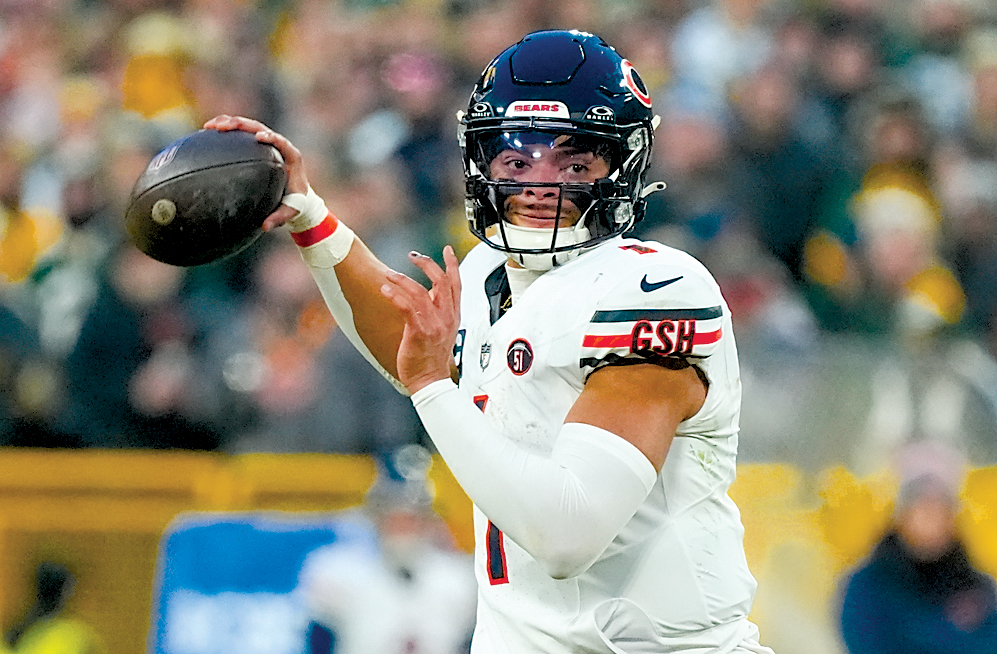
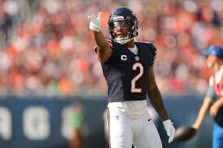
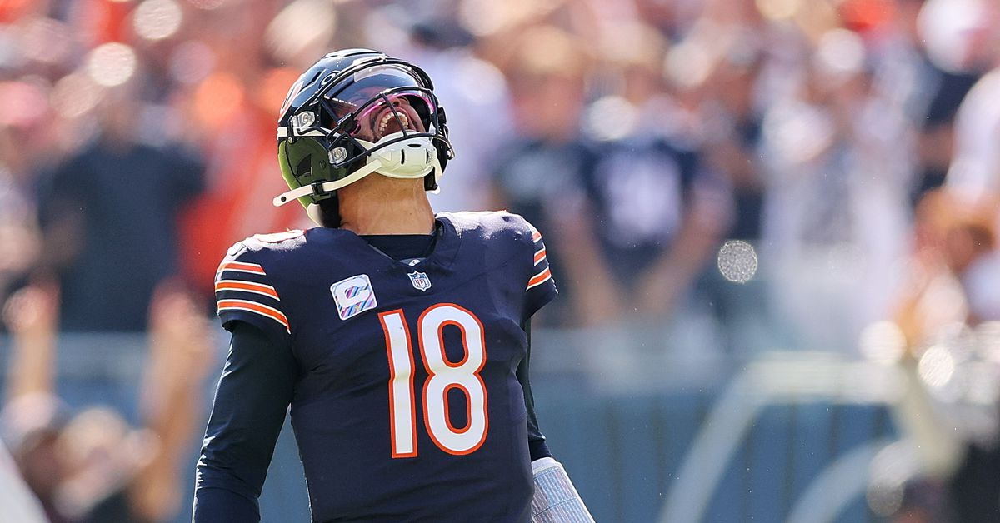
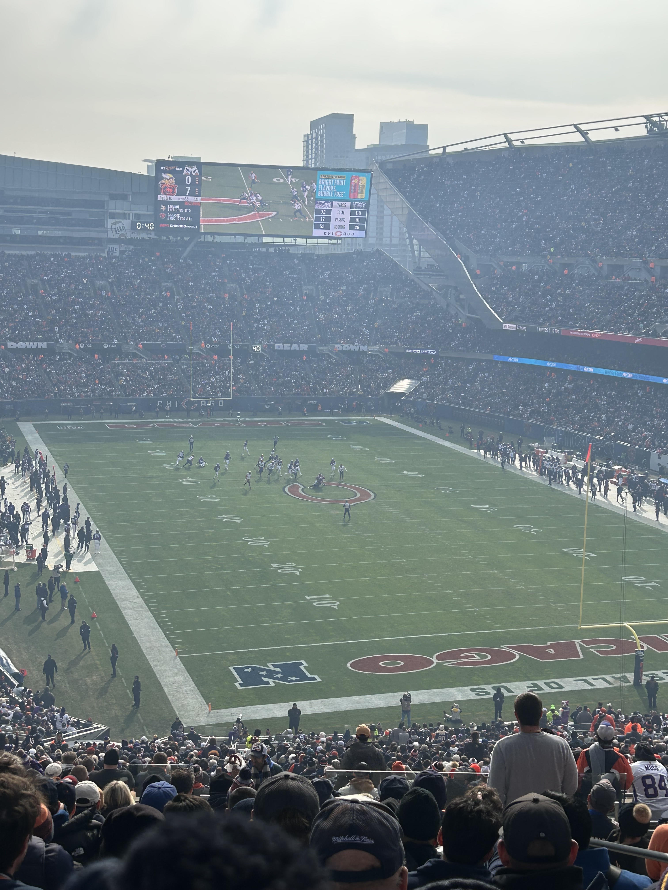

List and descriptions of my favorite players.

Justin Fields is my favorite player who has played for the chicago bears. Before he got traded, he was one of the most electric and fun players to watch.
He could always evade pressure and run for a touchdown if you did not stop him.

Dj Moore is one of my favorite players. Hes more quiet and reserved compared to other players at his positin but I like the humility. Ever since he got traded here,
hes been a hard worker and been a great player for the bears.

Caleb Williams is my new favorite player. He just got drafted last year but hes shown that he handle the big leagues and looks like a future star. I hope next year he can show his true potential.
My Favorite Game Attended

My favorite game that I have attended was week 12 bears vs vikings. This game was electric where caleb williams threw for 300 yards and two touchdowns against a stacked minnesota defense,
the food was pretty good too, me and my friend had a great time.
Links